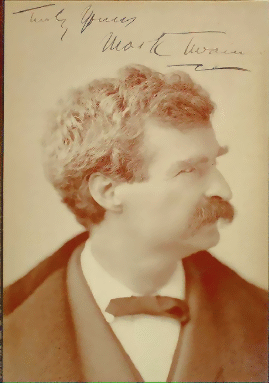

Mark Twain in His Times
An Electronic Archive
The Electronic Text Center
University of Virginia
Written and Directed by
Stephen Railton,
Department of English, University of Virginia
Produced by
David Seaman, Virginia Cope,
Lisa Goldberg, and David Gants
Electronic Text Center, University of Virginia
Filmed almost entirely on location at
the Special Collections Department, University of Virginia
This is a work-in-progress. Drawn mainly from the resources of the Barrett Collection, it focuses on how "Mark Twain" and his works were created and defined, marketed and performed, reviewed and appreciated. The goal is to allow readers, scholars, students and teachers to see what Mark Twain and His Times said about each other, in a way that can speak to us today.
Spring 1996: ENAM358 Homepage
Mail Stephen Railton
Most text and images © Copyright 1996
by Stephen Railton and the University of Virginia Library.
All rights reserved. Please see our
Conditions of Use.